Multitask learning or coaching (Gaussian responses)
MultitaskLearning.Rmd#> Loading required package: ptLasso
#> Loading required package: ggplot2
#> Loading required package: glmnet
#> Loading required package: Matrix
#> Loaded glmnet 4.1-8
#> Loading required package: gridExtraMultitask learning consists of data \(X\) with two or more responses \(y_1, \dots, y_j\). We usually assume that there is shared signal across the responses, and that performance can be improved by jointly fitting models for the responses.
Here, we suppose that we wish to predict multiple Gaussian responses. (If the goal is to predict multiple responses of a different type, see the section “Multi-response data with mixed response types”.)
Pretraining is a natural choice for multitask learning – it allows us to pass information between models for the different responses. The overview for our approach is to:
- fit a multi-response Gaussian model,
- extract the support (shared across responses) and offsets (one for each response), and
- fit a model for each response, using the shared support and appropriate offset.
Importantly, in Step 1, we use regularization so that the multi-response Gaussian model is forced to choose the same support for all responses \(y_1, \dots, y_j\). This encourages learning across all responses in the first stage; in the second stage, then, we find features that are specific to each individual response \(y_k\).
This is all done with the function ptLassoMult (“Mult”
stands for multi-response ptLasso).
We will illustrate this with simulated data with two Gaussian responses; the two responses share the first 5 features, and they each have 5 features of their own. The two responses are quite related, with Pearson correlation around 0.5.
set.seed(1234)
n = 1000; ntrain = 500;
p = 500
sigma = 2
x = matrix(rnorm(n*p), n, p)
beta1 = c(rep(1, 5), rep(0.5, 5), rep(0, p - 10))
beta2 = c(rep(1, 5), rep(0, 5), rep(0.5, 5), rep(0, p - 15))
mu = cbind(x %*% beta1, x %*% beta2)
y = cbind(mu[, 1] + sigma * rnorm(n),
mu[, 2] + sigma * rnorm(n))
cat("SNR for the two tasks:", round(diag(var(mu)/var(y-mu)), 2))
#> SNR for the two tasks: 1.6 1.44
cat("Correlation between two tasks:", cor(y[, 1], y[, 2]))
#> Correlation between two tasks: 0.5164748
# Split into train and test
xtest = x[-(1:ntrain), ]
ytest = y[-(1:ntrain), ]
x = x[1:ntrain, ]
y = y[1:ntrain, ]Now, we are ready to call ptLassoMult with our
covariates x and response matrix y. (The
syntax is nearly identical to that of ptLasso, and as in
ptLasso, the default value of \(\alpha = 0.5\).) A call to
plot shows the CV curves over the lasso parameter \(\lambda\) for each model.
fit = ptLassoMult(x, y)
plot(fit)
To choose the pretraining parameter \(\alpha\), we can use
cv.ptLassoMult. The syntax is as in
cv.ptLasso; and just like cv.ptLasso, we can
view the CV curve for pretraining together with the overall model
(multi-response Gaussian model) and the individual model (a separate
Gaussian model for each response) using plot.
fit = cv.ptLassoMult(x, y)
plot(fit)
The predict function works the same as in
ptLasso; if ytest is supplied, it will print
the mean squared error as well as the support size for the pretrained,
overall and individual models, using the single \(\alpha\) that minimizes the the average CV
MSE across both responses.
preds = predict(fit, xtest, ytest = ytest)
preds
#>
#> Call:
#> predict.cv.ptLasso(object = fit, xtest = xtest, ytest = ytest)
#>
#>
#>
#> alpha = 0.2
#>
#> Performance (Mean squared error):
#>
#> allGroups mean response_1 response_2
#> Overall 9.394 4.697 4.227 5.168
#> Pretrain 8.907 4.453 4.186 4.721
#> Individual 9.465 4.733 4.243 5.222
#>
#> Support size:
#>
#> Overall 57
#> Pretrain 23 (19 common + 4 individual)
#> Individual 80However, as in predict with ptLasso, we can
choose to use the value of \(\alpha\)
that minimizes the CV MSE for each response.
preds = predict(fit, xtest, ytest = ytest, alphatype = "varying")
preds
#>
#> Call:
#> predict.cv.ptLasso(object = fit, xtest = xtest, ytest = ytest,
#> alphatype = "varying")
#>
#>
#> alpha:
#> group_1 group_2
#> 0.3 0.2
#>
#>
#> Performance (Mean squared error):
#> allGroups mean response_1 response_2
#> Overall 9.394 4.697 4.227 5.168
#> Pretrain 8.877 4.438 4.156 4.721
#> Individual 9.465 4.733 4.243 5.222
#>
#>
#> Support size:
#>
#> Overall 57
#> Pretrain 23 (19 common + 4 individual)
#> Individual 80